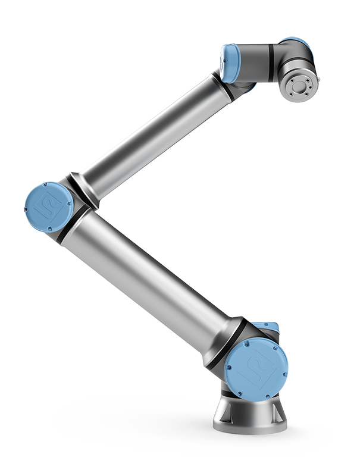
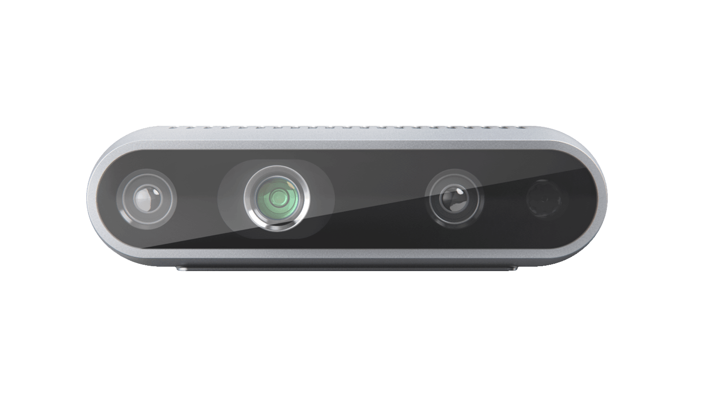

Robot Platform
The robot system used in the competition consists of a UR10e collebrative robot, a Robotiq Hand-E gripper, a pair of 3D-printed fingertips, a Realsense D435i RGB-D camera, a camera bracket, and a fill light.
| Equipment | Image | Description |
|---|---|---|
| UR10e Cobot |  | The UR10e cobot is mounted with the table and controlled through the real-time data exchange (RTDE) interface. |
| Robotiq Hand-E gripper |

|
The Hand-E gripper is mounted on the tool flange of the UR10e cobot and controlled via the Modbus RTU protocol from the computer. |
| 3D-printed fingertips |

|
The 3D-printed fingertips are re-designed based on the original fingertips of the Robotiq Hand-E gripper to adapt to the competition tasks by adding grooves and non-slippery pads. |
| Intel Realsense D435i |  | The Realsense D435i RGB-D camera is mounted on the UR10e cobot through a bracket and connected to the computer through a USB cable. |
| Camera bracket |

|
The camera bracket is designed to mount the Realsense D435i RGB-D camera on the UR10e cobot. It is frabricated by CNC with Al6061. |
| Fill light |

|
The fill light is used to provide additional illumination for the RGB-D camera to improve the image quality. It is mounted above the workspace. |